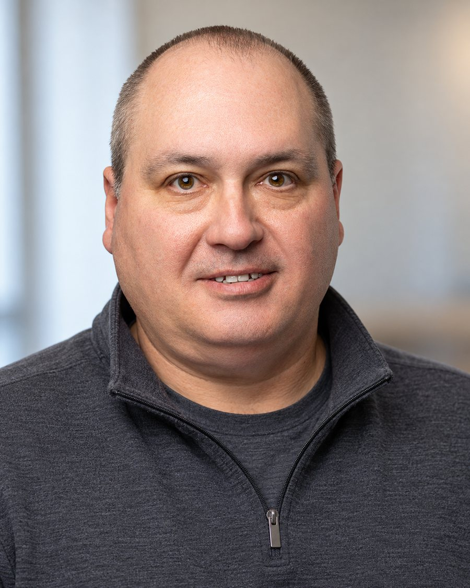
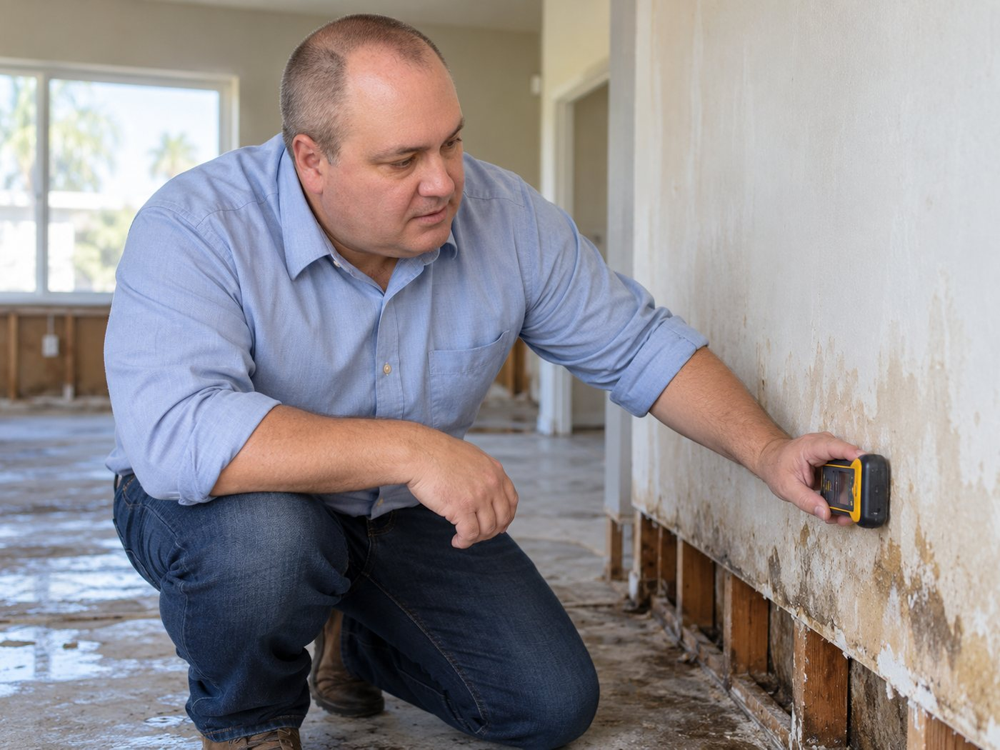
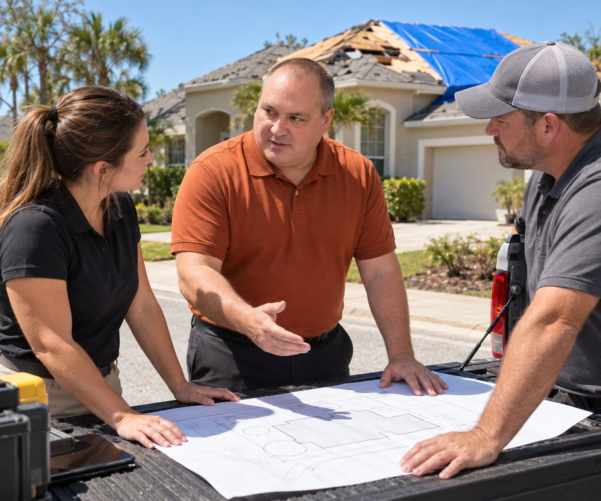
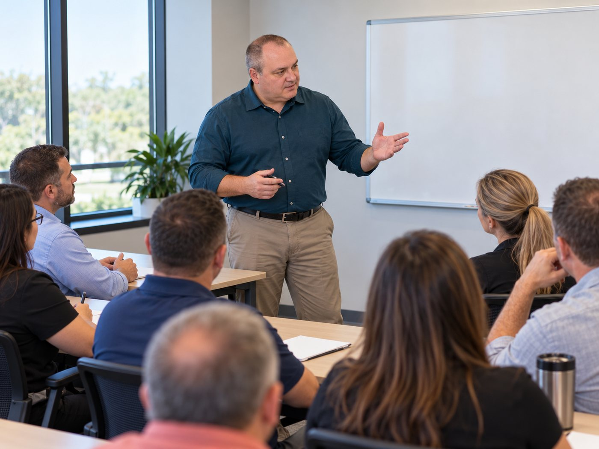
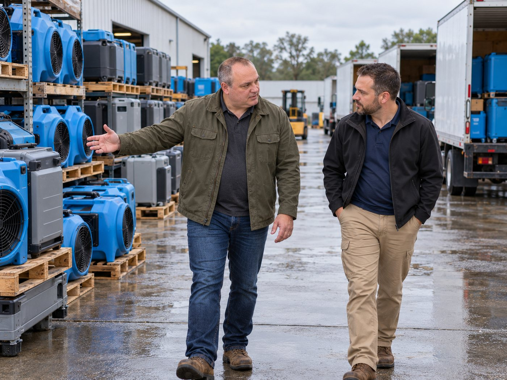
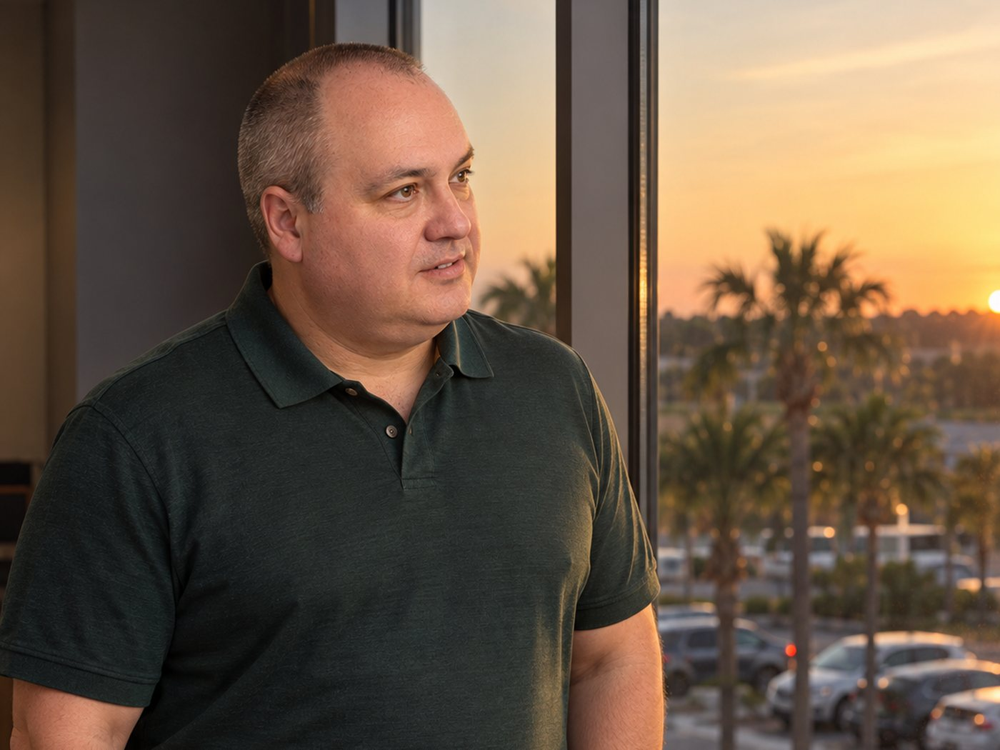

Property and casualty claims · Davenport, Florida
More than three decades of claims work, from climbing roofs as a field adjuster to running claims for an insurer. Now consulting on claims, risk, vendors and restoration.
Work with himWhat he does now
Michael Durovic spent thirty-two years on both sides of a property loss: the adjuster at the door, and the executive who decides how a thousand of those visits get handled.
He now works as an independent consultant, advising on claims operations, risk management, vendor management and restoration. The work ranges from reviewing how a claims team is set up to sitting with a contractor and asking why a mitigation invoice looks the way it does.

Field adjusting, file quality, team structure and the training that keeps both steady through a storm season.
Where the exposure actually sits, and what it costs to carry it, drawn from a career of seeing which losses turn expensive.
Choosing, pricing and holding to account the contractors and adjusting firms a carrier depends on.
Water mitigation and repair work reviewed on its merits, with a meter on the wall rather than an invoice on a desk.
The short version
The year he started, as a multi-line adjuster in Newburgh, New York. He has worked in claims ever since.
Staff at Pharos Claims Service over his years there. He joined in 2013 when it was five people and was executive vice president when it reached seventy.
Louisiana, Texas, Florida, North Carolina and South Carolina, the footprint of the insurer whose executive committee he sat on.
Water and wind
Most of what he has written for homeowners is about this moment: the floor is up, the fans are running, and somebody has to explain what happens next and what it should cost.
The record
Claims, risk management, vendor management and restoration, for a range of clients.
Field adjusting, vendor management and mitigation review, guiding strategic initiatives across the group. Sat on the executive committee overseeing Lighthouse Property Insurance Corporation, which operates in Louisiana, Texas, Florida, North Carolina and South Carolina, and Lighthouse Excalibur in Louisiana.
Joined when the firm had five employees. It had seventy by 2022. Ran operations and claims for the companies inside the enterprise and drove its growth. This is the stretch that shaped how he reads claims management and vendor relationships.
Worked with his team on complex claims processes and put in place the practices that lifted both efficiency and customer satisfaction.
Orlando. Claims through a period of expansion, contributing to the operational advancement of the business.
Evaluating and processing claims, and confirming each one stood up against industry standards.
Managing teams of adjusters, with training and development a large part of the job.
Albany branch. Where the risk assessment and customer handling habits were formed.
Fort Orange Claims Unlimited Services in Newburgh, New York, then Arbitrage Adjusting Services in Rochester.
Credentials
Ten of the professional designations he holds.
Still on the roof
Three years as a multi-line adjuster before the first management job, and the habit never left. The quickest way to know what a loss really is remains standing on it.
Teaching
He has mentored students in the risk management and insurance program at Florida State University's College of Business since 2016, the same school where he took his own master's degree in 2015. He still does it.
Inside the industry the teaching has been constant too: training adjusters was a large part of the supervisor years at Cunningham Lindsey, and developing staff is what he says he wants to spend the next stretch of his career on.
He has also volunteered supporting young adults aging out of foster care, helping with education, counseling and preparing for job interviews.
“Be curious. Try and understand why something works the way it does. Don’t just do something because somebody told you to do it. Find what interests you.”
His advice to people entering the field
Continued study
He puts his career down to continuous learning, and the record backs it: two of his three degrees came after he was already running claims teams.
Influences
He credits Patrick White, who owns the companies he works with, for the servant leadership approach he took up himself: develop the people, and the organisation follows.
Looking ahead
Writing
Two of his three published pieces are written for homeowners rather than for the industry, which is unusual for someone at his level and tells you something about how he sees the job.
The work





Contact
For consulting work, speaking, or a second opinion on a claims operation.
He is on LinkedIn.
A contact form will be wired here as soon as Mr. Durovic confirms the address he wants enquiries sent to. No address of his is published anywhere today, and nothing on this page will guess one.